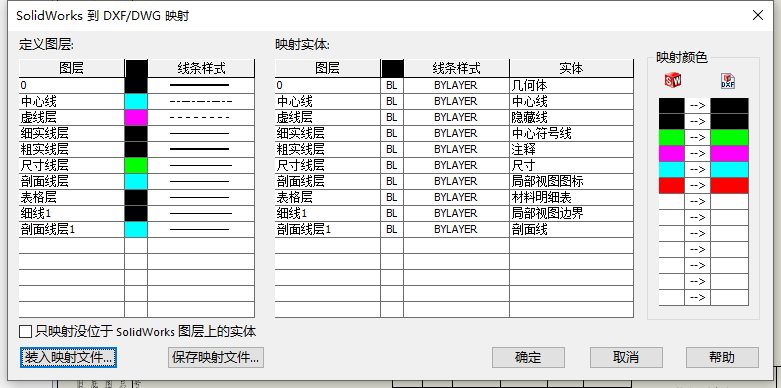

CAD映射文件
您可在将工程图保存为 .dxf 或 .dwg 文件时映射 SOLIDWORKS 工程图实体和颜色以在目标文件中配置这些实体和颜色
默认情况下SW定义的图层会自动另存到DWG/DXF文件的图纸中并生效。但如果您对SW里的对象（例如几何体、注释等）需要统一做关联映射时，则可有考虑CAD映射文件。
新建
- 从 SOLIDWORKS 工程图单击 文件 > 另存为 ，然后选择 .dwg 或 .dxf 作文文件类型。
- 单击选项。
- 勾选激活，然后清除 在每次保存时不显示映射关系。点击确定选项设置，点击保存

空映射文件路径下保存，会出现 SOLIDWORKS 到 DXF/DWG 。列表里展示的即是自定义映射的对照
例如：
定义图层：是对即将保存成DWG/DXF文件的图层定义
映射实体：1列是“定义图层”里的的内容，4列是SW实体对象
设置的映射表格，建议可有【保存映射文件】留作模板使用。单击确定保存DWG文件。